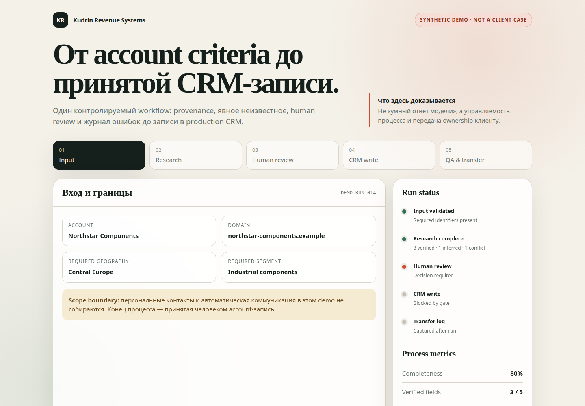

Согласованная схема
Input → research → verification → brief → human review → CRM.
Account research · pipeline operations · CRM
За четыре недели проектирую, собираю и запускаю один B2B-workflow: от критериев компании и проверки данных до принятой записи в CRM.
С baseline, human review, журналом качества и передачей вашей команде — без обязательного ретейнера.
Узнаёте процесс?
01Данные о компании и ЛПР живут в сайтах, таблицах, переписке и памяти людей.
02Обязательные поля заполняются неодинаково, а источник факта теряется.
03CRM получает неполный контекст — следующий человек начинает research заново.
04Руководитель не видит время на account, очередь, качество и стоимость переделок.
Что останется через четыре недели
Input → research → verification → brief → human review → CRM.
unknown / not verified вместо уверенно выдуманных полей.
Ничего не записывается в production CRM без принятия человеком.
Журнал ошибок, возвратов, конфликтов источников и ручных исправлений.
Время, completeness, acceptance без исправлений и стоимость операции.
Runbook, доступы, обучение и возможность работать без автора системы.
Build → operate → transfer
Ориентиры действуют при своевременных доступах и обратной связи. Точный календарь фиксируется в SOW.
Current process map, baseline, data schema, риски и критерии приёмки.
Рабочее demo на согласованной выборке и первая измеримая итерация.
Review, error log, исправления и повторный прогон вместе с командой.
Workflow, документация, обучение и решение scale / stop / redesign.
До покупки
Demo проходит весь путь от критериев account до human review и CRM write. Рядом — артефакты, по которым принимается реальный проект.
unknown;Synthetic demo показывает метод и контроль. Оно не выдаётся за результат клиента.

Открыть demo ↗Анонимизированный опыт · IT-аутстаффинг
Девять лет управлял B2B pipeline, который связывал сегментацию, research, delivery, CRM-квалификацию и операционную аналитику.
Capability case · 2026
Система выпустила более 50 структурированных досье. Живая почта подтверждает регулярную передачу материалов постоянной BD-команде.
Подтверждены production и передача. Встречи и pipeline outcome пока не измерены.
Цифры проверены по CRM, задачам, переписке и рабочим документам. Если источник или личная роль не восстановлены, показатель не публикуется.
Пилот подходит
Не подходит
Founding-client pilot
четыре недели · один workflow
API, серверы, лицензии и платные данные оплачиваются отдельно.
30 дней исправления воспроизводимых дефектов включено.
Новый workflow или интеграция сверх scope — отдельный SOW.
Кто ведёт работу
Большую часть карьеры я работал в предпринимательской среде: запускал процессы с нуля при ограниченных ресурсах, проверял гипотезы, управлял командами и бюджетами, а временные решения превращал в управляемые системы.
Я работаю в двух регистрах: сначала вместе с владельцем процесса фиксирую границы и критерии качества, затем сам собираю систему и работаю в ней с командой до передачи.
Моя цель — не продлить собственный ретейнер, а оставить вам управляемый workflow, документацию и ownership.
Никита Кудрин · ИП · Kudrin Revenue Systems
Следующий шаг
Напишите в двух-трёх предложениях: что запускает процесс, кто выполняет работу, кто принимает результат и куда он должен попасть. За 30 минут определим fit / diagnostic / no fit.